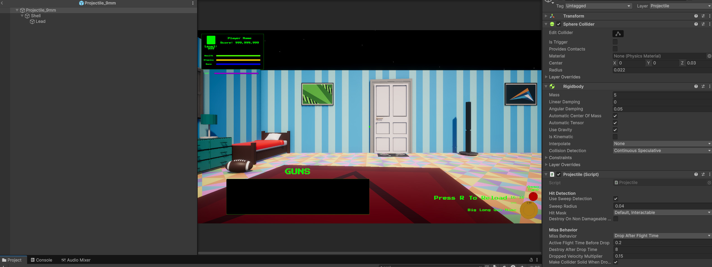
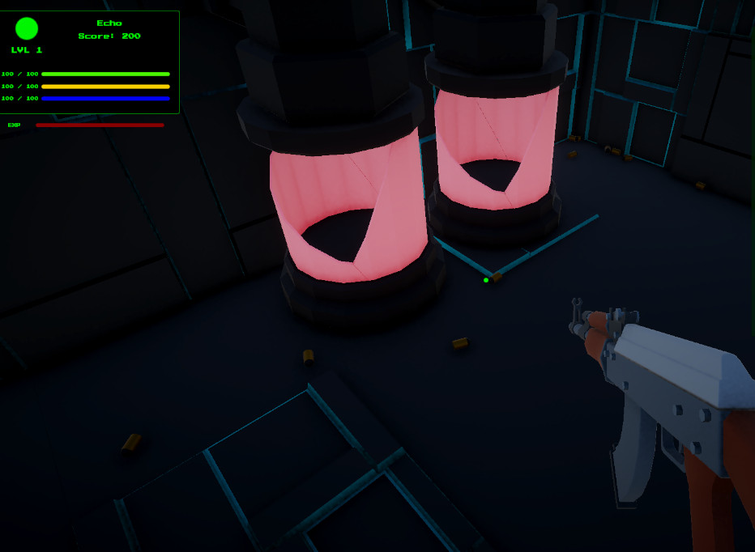
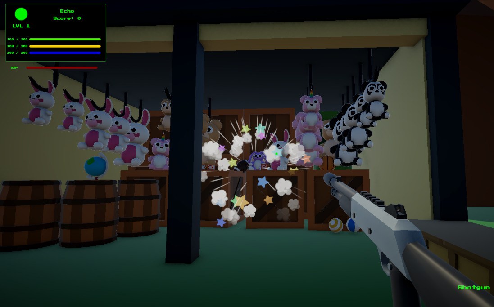
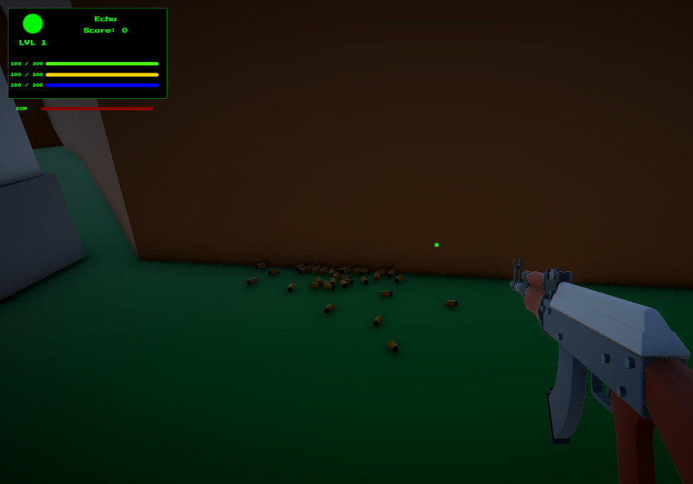
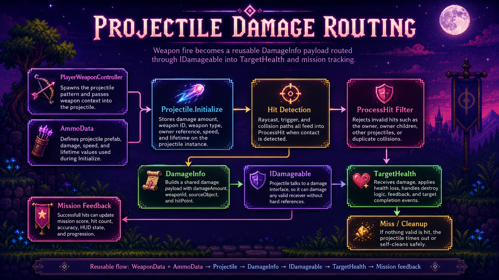

Projectile Prefab Setup
Projectile prefabs expose hit detection and miss behavior values so bullets, shells, and pellets can behave differently.
- Projectile
- Rigidbody
- Collider
A reusable Unity projectile system for weapon fire, pellet spreads, sweep detection, trigger and collision routing, damage payloads, owner filtering, dropped missed projectiles, and mission hit registration.
This system handles what happens after the player pulls the trigger and before the target breaks.
The Projectile & Hit Detection system turns weapon fire into physical gameplay events. A weapon spawns one or more projectiles, each projectile travels forward using its configured speed, checks for valid collisions, ignores the player who fired it, and routes damage into any object that implements IDamageable.
The projectile carries weapon context through DamageInfo, including damage amount, weapon ID, weapon type, source object, and hit point. This keeps the target system flexible because targets do not need to know which weapon fired the shot. They only need to know that damage arrived.
The system also supports missed projectile behavior. Projectiles can destroy after a lifetime, or they can lose their active damage state and drop to the ground as harmless physical objects.
Move projectiles through the world, detect valid hits, route damage, and report successful target hits to mission tracking.
Spawn projectile → Move forward → Sweep for hit → Build DamageInfo → Damage target → Destroy or drop.
Demonstrates collision handling, interface-based damage routing, context payloads, projectile cleanup, and reusable weapon-fire architecture.
Screenshot references for projectile inspector setup, ammo data, pellet spread, target impacts, dropped missed projectiles, and damage routing.

Projectile prefabs expose hit detection and miss behavior values so bullets, shells, and pellets can behave differently.

AmmoData defines projectile prefab, damage, speed, lifetime, and ammo identity before the projectile is initialized.

Valid hits route damage into TargetHealth through IDamageable, then mission hit tracking updates accuracy and score.

Multi-projectile weapons can spawn several projectiles per shot, supporting shotgun-style spread patterns.

Missed shots can become harmless dropped objects instead of disappearing instantly, giving the scene extra physical feedback.

DamageInfo carries weapon context through the hit pipeline so targets and mission systems can react intelligently.
The projectile behaves like a tiny courier goblin carrying damage paperwork at unsafe speeds.
The weapon controller creates the projectile prefab and passes in damage, weapon ID, weapon type, owner, speed, and lifetime.
The projectile stores its damage context, disables gravity, sets velocity, caches previous position, and starts its lifetime timer.
If enabled, the projectile sphere casts between its previous and current positions to reduce missed hits at high speeds.
The projectile ignores its owner, owner child objects, and other projectiles so shots do not collide with the firing player or pellet siblings.
The hit object, its parent, or its children are checked for IDamageable so the damage target can be flexible.
The projectile builds a DamageInfo payload and sends it to the damageable target, then destroys itself.
The system combines Unity collision events with optional sweep detection for more reliable projectile hits.
Fast projectiles can move far between physics steps. If a small projectile skips across a target between frames, a normal collision event may not always tell the full story. Sweep detection helps cover that gap by checking the path from the previous position to the current position.
The projectile uses a sphere cast with a configurable radius and hit mask. This gives the hit test a small amount of thickness, which works well for bullets, pellets, and fast target range projectiles.
Trigger and collision callbacks still remain available, which makes the projectile more forgiving across different prefab setups. The projectile can work with trigger colliders, solid colliders, and sweep checks depending on the object setup.
Projectiles do not need to know what a target is. They only need to know whether it can take damage.
The projectile searches for IDamageable instead of directly referencing TargetHealth. This keeps the projectile reusable for future enemies, props, destructibles, or test objects.
DamageInfo stores damage amount, weapon ID, weapon type, source object, and hit point. The target receives context without needing to inspect the projectile.
Valid damageable hits notify the mission controller, allowing accuracy, hit count, score, and weapon XP systems to respond.
The projectile ignores the player object that fired it and any child colliders under that owner.
Projectiles ignore other projectiles so pellet clusters and rapid fire do not collide into their own tiny traffic jam.
If a projectile hits a non-damageable solid object, it can destroy itself instead of bouncing forever or haunting the range.
Not every shot hits a target. The system still needs those misses to behave cleanly.
Projectiles support two miss behaviors. DestroyAfterLifetime is the cleanest option: a projectile lives for a set amount of time and then disappears.
DropAfterFlightTime creates a more physical result. After the active flight window ends, the projectile becomes harmless, turns gravity back on, reduces its velocity, receives random angular velocity, and optionally makes its collider solid.
This is especially useful for visible pellets, darts, bolts, shells, or other projectiles where misses should leave a little battlefield confetti behind. It adds feedback without letting missed projectiles keep damaging things after their active flight is over.
Dropped projectiles set their hit state so they stop dealing damage before becoming physical clutter.
The projectile pipeline stays compact by separating ammo data, projectile movement, damage payloads, and target response.
Handles initialization, velocity, lifetime, sweep detection, collision callbacks, owner filtering, damage routing, miss behavior, and cleanup.
Defines projectile prefab, damage, speed, lifetime, ammo identity, and projectile behavior values used during weapon fire.
Carries damage amount, weapon ID, weapon type, source object, and hit position into the target response layer.
Provides a simple contract for anything that can receive damage from projectiles.
Spawns projectiles, creates projectile patterns, applies spread, and passes weapon context into projectile initialization.
Receives DamageInfo through IDamageable, subtracts health, plays destruction feedback, and notifies mission target logic.
This page works best with inspector and gameplay screenshots rather than a full script dump.
The Projectile component has useful Inspector values: sweep detection toggle, sweep radius, hit mask, miss behavior, drop timing, dropped velocity multiplier, collider behavior, Rigidbody setup, and prefab configuration.
AmmoData is also important to show because it explains where projectile damage, speed, lifetime, and prefab references come from. Together, the projectile prefab and ammo asset tell a clear story: weapons ask ammo what to fire, then projectiles handle travel and hit routing.
For gameplay shots, the strongest visuals are projectile impact, pellet spread, missed pellets dropped on the ground, and a target being destroyed after receiving routed damage.
Reusable projectile architecture that supports different weapons, ammo types, target objects, and miss behaviors.
This system grew from simple bullet collision into a reusable damage pipeline.
The first projectile loop only needed to hit basic targets. As the weapon system expanded, projectiles needed to support spread patterns, different ammo data, reliable fast-hit detection, and cleaner missed-shot behavior.
Sweep detection improved reliability for fast projectiles. DamageInfo improved context by letting each hit carry weapon identity, type, source, and impact position. IDamageable kept the projectile from depending directly on TargetHealth.
The dropped projectile behavior added a small layer of physical feedback while keeping gameplay safe: once a projectile drops, it becomes harmless and eventually cleans itself up.
Projectiles were mainly a simple target damage test with limited miss behavior.
Projectiles support sweep detection, owner filtering, IDamageable routing, DamageInfo payloads, and harmless dropped misses.
The same projectile pipeline can support pistols, shotguns, future weapons, destructibles, and target range objectives.
This system shows the practical collision and damage-routing work underneath the weapon feel.
Projectile & Hit Detection demonstrates reusable Unity gameplay architecture for ranged combat and target interaction. It shows projectile initialization, physics setup, sweep detection, owner filtering, interface-based damage routing, damage payload design, mission hit registration, and cleanup behavior.
This is important because projectile systems can become brittle when every weapon, target, and collision case is hardcoded. This system keeps those responsibilities separated so new weapons and target types can reuse the same pipeline.
For portfolio purposes, this is a strong technical support page: it proves that the weapon system is not just visual polish. There is a reusable hit pipeline underneath the fireworks.
Projectile hit detection connects weapons, ammo, targets, mission tracking, and feedback systems.
Covers target groups, target slots, respawning objectives, destroy-all targets, target health, and mission notifications.
Covers WeaponData, AmmoData, owned weapons, active weapon state, projectile patterns, and mission weapon restrictions.
Covers view model kickback, reticle recoil, muzzle flash, reload feedback, dry fire, sway, bob, and weapon feel.